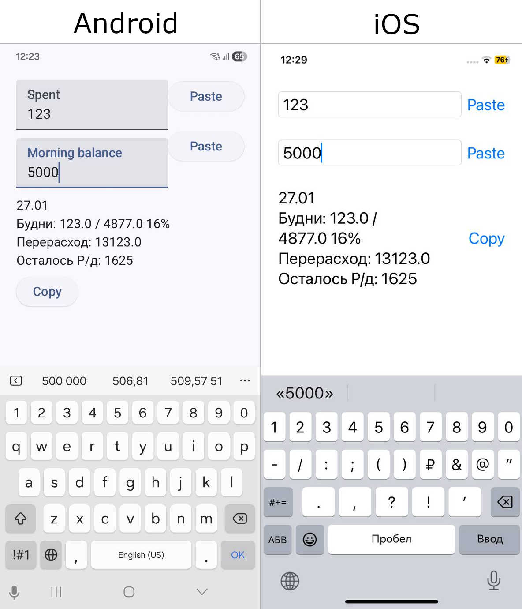

2026-02-01

В январе воскресил проект GitBudget по двум причинам:
В далёком 2020-м году при первой попытке сделать GitBudget мой акцент был на ведении истории трат, не аналитике. Сейчас же я в первую очередь сделал подсчёт баланса на текущий день по своей модели бюджета, т.е. как раз сделал аналитику, историю трат отложил.
В феврале планирую перенести GitBudget на Desktop с помощью Qt.